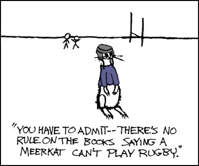

I had just finished working on my latest card game; I was rather chuffed with it: the rules were elegant and nuanced: there was a wealth of strategies you could use in the game. I explained the rules to two friends, and they began to play. I was expecting them to be amazed with the game.
Instead, I was amazed with how one had managed to find a neat little trick to — unexpectedly — win the game: a loophole!
After the discovery, the game was never the same. I eventually decided to change the card game into a board game so that the game could keep my original idea, but without the loophole.
After the change in my game, I became obsessed with loopholes in games. I began to research them and find how they could affect games. In this article, I summarize my research. This article covers what loopholes are, and why they are bad, with a big list of generic types of loopholes that can be found in games. The article also gives some advice on how to find and correct these nasty little game breakers.
What a loophole is
If something can be abused, it will be.
— Hyrop’s Law of Loopholes
A loophole can be defined as a flaw in the system that users can exploit to gain an unfair or unintended advantage.
[Fullerton, Game Design Workshop]
Loopholes are often the result of emergence; two or more rules acting together to make something possible that was not thought possible. Loopholes arise when the game rules don’t completely limit or enforce the legal behaviour.
Players find loopholes when they know the rules very well, or by accident. However they find it, the result is always the same: they will use the loophole, regardless of whether it makes the game more fun. A pointed example of players grinding away instead of having fun is with achievement farming.
When given a task, players will find the optimal solutions, even if it ruins their fun. Finding optimal solutions is part of playing the game — it is the designer’s responsibility to create the necessary challenges for an interesting solution; this burden is never the player’s.
Loopholes lead to unwanted player behaviour; the named loopholes discussed below are all words for things the player can do, but the designer does not (usually) want.
(RC: Before we continue I wanna chime in here for a moment.
I want to highlight that the context of this entire article are games that are designed from the perspective of the author’s own ego to create contrived arbitrary situations that participants are expected to accept and abide by rather than trying to create something that serves the player’s natural human needs, which is what leads to a situation that this author finds negative. I don’t fully agree with their view.
However, I wanted to share this article because the topic of loopholes is still interesting to consider when building games because it highlights just how careful you have to be when creating systems, mechanics, content and features for your game, otherwise you can easily create a situation that will break apart the core experience you’re trying to provide to the player.
Attention to detail during the design phase can help catch loopholes before you accidentally end up wasting your time creating busted code and content.
Still, the many examples in this article talk about situations that result from faulty game design that were built from the perspective of “look how cool I am, obey me” more aimed at wasting your time, causing addiction and filling your head with nonsense knowledge instead of “how can I serve the player to make their real life better” where the goal is to empower you, keep you healthy and never waste your time. Take the “lessons” from this article with a grain of salt.
-Reactorcore)
Related Concepts
Loopholes are degenerate strategies to play the game. Among all available strategies, a dominant strategy has the best chance of leading to success. A degenerate strategy is a dominant strategy that always leads to success. (Not all dominant strategies are degenerate: the prisoner’s dilemma is a classical example.)
Loopholes are often bugs, but only bugs that can be exploited by the player are loopholes.
Many loopholes are sequence breakers (that is, they allow the player to experience events in a different order than was intended), but only sequence breaks that benefit the player are loopholes.
Many loopholes are exploits — ways to play the game that goes against the spirit of the game. But not all exploits are loopholes. For example, some exploits require special tools for hacking the game. These are generally considered cheating.
Examples of loopholes
In Bastion, players can deliberately fall off a barge, forcing the game to respawn them in a non-combative state on a moving barge. In this way, players can traverse part of the level without having to engage in combat. A secondary effect of this loophole is that the narrator does not realise what’s happening; he happily talks about combat as if it is still happening.
In an earlier version of Desktop Dungeons, there was three altars in each dungeon. Each of these altars randomly selected one god from a possible nine gods. These gods were unlocked one-by-one through quests. Players realised that if they have only unlocked three gods, they could know which three gods would spawn with certainty. Thus, the randomness of gods was removed. The developers have since fixed this loophole by making only one altar available in a dungeon until the player has unlocked four gods.
In Rock of Ages it is possible for a rock to hit the door, and then bounce off the pathway. The game then places the rock back on the pathway, allowing the player to hit the door twice with only running the course once. This is a detrimental loophole because the game requires the player to traverse a course before they can hit the door.
In Magic The Gathering the Chaos Orb card removes any card it landed on from play. Some players would tear it up and sprinkle it on their opponents cards to remove multiple cards from play. When a player tried this the first time, the judges ruled it legal, since there was no rule against tearing the card up.
Fallout 3 has a loophole where the player may skip a large portion of the game by going straight to one city (The Citadel), and then using any item to jump into the city, instead of completing the quests to get inside.
In The Elder Scrolls V: Skyrim a player can place a bucket on NPC’s head and rob him blind without the NPC realising it.
In Deus Ex players could uses LAMs, a grenade which could be placed as a proximity mine, as a ladder. This allowed players into areas in ways that were not intended.
A ten year old hacker exposed the following generic loophole at DefCon: in social games that run on mobile devices, you can set the time forward and receive reward without having to wait for it.
More examples:
- Loopholes in Sid Meyer’s Civilisation IV
- Loopholes in Skyrim (levelling up)
- Loopholes in The Sims 3
- Playing games in different ways

Why loopholes are bad
According to Adams, gameplay is
- The challenges a player must face to arrive at the object of the game.
- The actions the player is permitted to take to address those challenges.
Loopholes interfere with both these aspects of gameplay.
They remove the challenge of the game. As mentioned earlier, players will take the easiest path towards their goal. A loophole introduces a new, easier path, effectively removing the path of challenge the designer intended. Without challenge, the gameplay is ruined.
They remove meaningful choice. Loopholes mess with the balance of the game, and an unbalanced choice is almost always a no-brainer. The existence of a loophole limits the range of interesting actions the player can take.
There are two additional reasons why loopholes are bad.
They remove fairness in multiplayer games. A game that is not fair is not fun, because all players would have to use the loophole to stay competitive. Designers should always strive to make games fair.
They can break the fourth wall. When a player uses a loophole, the game reacts in a way that exposes its limitations and underlying machinery. This can remove the sense of atmosphere and story from the game, because things no longer make sense without looking outside the magic circle. The narrator glitch in Bastion mentioned above is the perfect example.
General types of loophole
The following behaviours can occur in any type of game. Many games rely on these behaviours for their gameplay, but when they were not the behaviours intended by the game designer, they show a loophole.
Memorizing is when the game or game AI follows patterns that players can memorize.
Pac-Man is famous for this — instead of responding to enemy behaviour, the best players memorize sequences of moves they have to make to complete a level.
The easiest way to avoid players from memorizing game events is to introduce a random element in the game, either in AI behaviour, or item and AI placement, or even just in the timing of the AI.
Predicting is when the player can learn the logic of the AI, and easily defeat it by predicting its next action.
Prediction can be avoided by introducing random elements as explained above, or making AI more nuanced (essentially, making it depend on more input variables).
Brute forcing (also called permutation play) is a way of solving certain kinds of puzzles, usually where the player must figure out the correct combination of moves, digits, levers, buttons, or something similar (there are many of these kinds of puzzles in Machinarium, for example).
In some cases, brute force is the intended method of solution. But when the designer intends the player to use logic and clues provided to solve the puzzle, solving it by brute force is a loophole.
There are two ways to fix this:
- Add more combinations (for example, adding a lever to a puzzle doubles the number of possible solutions), so that brute force techniques become infeasible.
- Make the logic or clues more transparent.
Pixel hunting is a special form of brute forcing that is common in point-and-click adventure games. Pixel hunting is where the player mouses over (or clicks, depending on the controls) the entire screen until a indicator pops up to show that they had found an interactive point.
Pixel hunting can occur in any game that highlights interactive points only when the mouse hovers over them or they are clicked, such as a FPS reticle turning red when passing over a hidden enemy.
In some cases making the player hunt for pixels is intentional, such as resource scanning in Mass Effect 2.
Hustling is when a player exploits the dynamic difficulty adjustment of a game by playing lower than her potential. This makes the game easier, and eventually allows the player an easy victory. This is similar to pool hustling in the “real world”.
Hustling is most common in the single-player mode of racing games. Racing games use dynamic difficulty adjustment, called rubber band AI, which adjusts the AI vehicles’ performance to match the player’s: the faster the player, the faster the AI. A player hustles by keeping in second place until the last lap (even if she can pass the first vehicle). With the player in second place, the game will not increase the difficulty; it thinks that the player is being challenged.
To fix rubberband exploits can be difficult. The racing game Pure uses a sophisticated alternative to the rubber band method. The system dynamically sets the AI some distance ahead of the player from the start. This means that the player is continually playing catch-up throughout the race until the end, where she can narrowly beat the AI. Like with rubber band AI, the player is generally capable of victory, but she can’t hustle.
Fortune hunting occurs in games with random level generation. The player briefly glances around the level to decide if they feel the level is easy enough for them to complete; if not, they simply restart the level in the hope of a more favourable one. Like the hustler, the fortune hunter is playing the game at a difficulty lower than the one that designer intended.
The designer can prevent fortune hunting in several ways:
- By normalizing level difficulty so that each randomly generated level is about the same level of difficulty (this can be hard, and requires a good understanding of statistics and the game mechanics).
- By not allowing a new level to be generated until the previous one has been played.This requires that you can guarantee that all your levels are fair. Otherwise, a level may be generated that frustrates the player to the point of quitting the game permanently.
- To make it more difficult to judge the level difficulty until the player has invested enough time not to want to quit the level.
Loopholes in FPSes
Edging is where the player stands around a corner and shoots a part of the enemy while the enemy can’t see the player. This loophole can be countered by having the enemy AI seek out the source of the damage.
Picking is the same as edging, except that the player hops out from the corner, shoots, and returns to hiding. As with edging, this loophole can be corrected by making the AI move towards the players to attack.
Wedging can be used on enemies with a short attack range: the player lodges an enemy in a place where it cannot attack her from. This allows the player to pick off this enemy with ease.
Ways to counter this loophole are to give the enemy a long range attack, to allow it a means to reach the player by fixing the level design or improve the AI, or to create entities which force the player towards it (using a rope, for example).
Kiting is when the player can move faster or shoot further than the AI. This allows the player to move backwards and attack the AI while not receiving damage.
Camping is when a player stations herself where enemies can’t see her, and attacks enemies from such a place. Camping is normally done from a distance and with a sniper weapon.
Simply making enemies return fire may cause the player to feel cheated. A proper solution is to make the enemies move towards the player. Another strategy (especially useful in multiplayer games) is to carefully design levels without any good camping spots, and give enough feedback so that players can learn the positions of campers, for example, the Heartbeat Sensors, Unmanned Arial Vehicles (UAVs), and KillCam in Modern Warfare 2.
Splashing is similar to camping. The player positions herself far away from the enemy and shoots an object that does splash damage, such as a grenade, at the enemy.
The are two solutions to this problem: first, the AI can be made to avoid splash damage of oncoming missiles with a bit of physics math; second, the AI can be made to seek out the player who launched the attack.
Serializing is when a player kills an entire group of enemies by picking them off one-by-one. This is typically happens in narrow spaces, or if the AI causes enemies to separate from the group. This is a loophole if the intention was to make it more difficult to take out groups, and give the player an opportunity to choose which enemies to take out first.
The simplest fix is for the enemy to trigger an alert state in the nearby enemies which allow them to move off in a group towards the player. The combat space also needs to be designed carefully to prevent serialisation.
Loopholes in multiplayer games
Turtling happens in games with resources — typically strategy games — and there are more than two players. When two players engage in combat, both will consume resources. This puts the combatants at a disadvantage since they both lost resources in the engagement. In the meantime, the turtle is better off than both, since she did not need to spend any resources, giving her an advantage in the next combat against either player.
This effect can lead everyone in the game to play turtle, which of course prevents the game from moving forward. The solution is to encourage aggressive play by awarding the winner of each battle with enough resources to offset the losses suffered in that battle.
Killing the leader occurs in games where a scoreboard is available during play. Players attack the leader, since she is the person most likely to win, often forming coalitions to achieve this goal.
With the multitude of players attacking the leader, it is likely that they may suffer damages to a point where they can’t recover from them, and they no longer have any chance at victory.
A simple solution is to remove scoreboards from the game. A more complex solutions is to prevent players from cooperating with one and other.
Sandbagging is is a form of hustling caused by the killing-the-leader effect. Good players are aware that others are likely to attack them if they are seen to be doing well. To prevent this, they deliberately underperform until they can act to their full potential and win the game. Note that the killing the leader effect serves as built-in dynamic difficulty adjustment.
The solution to this is the same as that for killing the leader: remove the leaderboard. If players don’t know who the leader is, there is no reason to play sub-optimally.
Kingmaking is when the player lower down in the scores is not able to win, but by her actions she can decide whom among the leaders does win. These actions can be in the form of sending resources to another player, or combining the armies in a coalition. This introduces an element of diplomacy into the game, where a player can win based on relationships and not skill. (As always, it is just a loophole if this is unintentional).
The solution to this is the same as the one for sandbagging and killing the leader: remove scorebords.
Experience leeching takes a variety of forms, but the general formula is the same. A player gains benefit of participation without putting in the required effort involved to achieve the outcome.
In games where experience is awarded to the player who lands the killing blow, leechers are passive in combat until the last moment, when they jump in and kill the enemy to get the experience, at little risk of dying.
In games where experience is awarded to all players in range of the kill, leechers can stay passive all the time; as long as they trail behind, they can get experience without having to take any risks.
Power leveling is a special kind of leeching. A player groups with a high level player who also kills enemies of a high level. Because of the level difference, the low level player will gain a wealth of experience causing them to level fast.
Simple solutions are to assign experience to the player who does the most damage, or to assign experience in proportion to the damage dealt.
AFK loopholes are a special form of experience leeching: instead of putting minimal effort, though, the player doesn’t put in any effort (they are, in fact, away from keyboard). The player hides in a place where other players will not notice that they are AFK, or even employs some form of bot.
Boosting or alt farming or alternate-account farming is a method where a player uses an alternate account to enhance the gains of her primary account. This is widespread in MUDs, where the players have a resource that they can attack repeatedly without fear of retribution. Boosting is also common in fighting games, where a player will “fight” against the character of her second account to boost her stats or position in the leaderboards.
A simple solution is to check the IP usage and discipline the user for abusing the game. The problem with this scheme is that the developer may punish a player unfairly, for example, if a player beats her brother at a game that they play together.
A more elegant solution is to implement a system of diminishing returns, where the continued killing of a single entity gives less gains for the attacker until it no longer to make sense to attack. This can further be improved by also making higher level players receive less benefits from attacking lower level players.
Twinking is the opposite of alt farming. It is when a player creates a low-level character and gives it the benefits that are intended for a high level character. The twink is kept at a low-level so that it may defeat opponents of similar level with great ease.
Smurfing is hustling by using a new account and pretending to be an inexperienced player to lure in and kill players that are actually inexperienced easily. This is common in games where there is matchmaking based on metrics tracking player capabilities. Examples include the recent Call of Duty games, the leagues in StarCraft II, and League of Legends.
Matchmaking systems are self-correcting: metrics will move the smurfer to matches with equally skilled players after a few games, so she can only use this technique a few times before having to create another new account. And with pay-to-play games, the smurfer is required to buy the game each time she wants to create a smurf account. In a free-to-play game it is up to the community and dev team to find a solution using social norms and policy (discussed more in a section below).
Ghosting is when a non-playing observer in a multiplayer game communicates to one player, or team, the actions of their opponent.
A sub form of ghosting is called stream sniping this is when highly skilled player broadcast their games live on a streaming service. Their opponents may then watch the stream and counter their opponents actions as they are watching them.
Account Sharing is when multiple people use the same account to achieve a goal that would need a large time commitment by a single player. With account sharing, such a goal can be reached with only a modest time commitment by each player.
Farming is when players focus on a goal that is not the main goal of the game. This can be something such as increasing their stats, or gaining achievements. Each of which would normally prefix farming when in action.
Achievement farming, in a multiplayer games, is when players of opposing teams cooperate with one and other so that players can easily gain achievements that would normally require skill and investment in the game.
Loopholes in racing games
Short circuiting is when the player finds a faster route to complete the race than the intended one. This can be as simple as driving the course backwards, but normally requires the player to find an error in the level design.
Spawn jumping occurs when the player respawns and has gained time. This normally involves the player dying in such a place that it is possible for them to spawn ahead, or dying in such a way that would dramatically increase her speed. An example of this is the rainbow bridge in Mario Kart, where a player could skip half the race by spawn jumping.
Perma boosting is when the player is able to continually use a speed boost that is only supposed to be used seldomly, or in a limited amount. An example of such an exploit is snaking in the Mario Kart games, where players use power slides to always have a boost on the vehicle. Another example is in F–ZeroX, where separate scoreboards are used for players who perma boost and those who don’t.
Loopholes in game physics
Wall jumping is when the player is able to climb up a wall by jumping against it, usually because of inaccurate physics or small glitches in the world geometry.
In World of Warcraft, before the introduction of flying mounts, it was possible to use this loophole to reach places in the game that the player shouldn’t have been able to.
Bootstrapping is when the player jumps onto an object that she ‘holds’. She just moves up and also brings the object up with her. This allows the player to jump up or fly as if she had a jetpack. The Fallout 3 loophole mentioned earlier relies on bootstrapping for the player to get access to the Citadel.
Bunny hopping is when the player uses a series of secondary movements to increase the movement speed. These movements typically involve jumping or crouching. Bunny hopping techniques vary from engine to engine.
Loopholes in saving systems
Duping is when there is a resource that persists through saves — generally a currency the player gains through an in-app purchase. The player gathers the resource; loads and gathers it again, while they are in turn getting richer for not doing any work.
Cloning is similar to twinking, but instead of creating a new account the player copies a saved game into a dummy account, sells the resources of the saved game for currency, and sends the currency back to the original account via a form of social integration where friends can ‘gift’ things to one and other.
The solution is to track the validity of player saves, or to check where the ‘gifts’ are coming from to be sure that they are from a legitimate user.
Save scumming is when a player makes multiple saves so that they can play a ‘perfect’ game. The player creates a number of saves and simply reloads one until they get the result they want.
A solution is to remove, or disable, a save that is frequently used without the correct condition for the load to happen — player death is typical. This, unfortunately, removes the player’s ability to reload when death is certain even before it occurred. An alternative is to make the games use save points instead of free saves.
Save scumming is similar to fortune hunting — the difference is that a player can progress with save scumming, while a player that merely fortune hunts has to restart the game (or level).
Some games make statistics manipulation a valid game mechanic, for example, in Castle Of The Winds levels are randomly generated on player entering, and players can choose to re-enter the level. This is a kind of fall-back-fix for otherwise broken mechanics (more precisely, broken procedural generation).
Save jumping is when the player uses the game auto-save system to their advantage. The player can do things such as teleporting to a different game point, or run to an autosave point while fighting to load the save and remove the enemies.
How to find game design loopholes
As a designer, finding loopholes is a challenge: you are trying to break the very rules you crafted so carefully to govern the game world. In non-computer games this may be easier because the rules are stated explicitly. In video games, the rules are implicit, and requires a player to learn the rules, mostly, through trial-and-error. Because of the complexity of some games, a loophole may be completely overlooked simply because the “proper way of playing” is ingrained in the designer’s head.
There are four ways to find loopholes in your design.
1. Use your own knowledge, experience and instincts
Look for loophole patterns. With experience, you will start to recognize the patterns that can lead to loopholes, and remove them from the design early. All the FPS loopholes discussed above arises from the interaction between the level design and AI.
Drawing from a large knowledge-base of loopholes in other games in your genre can be very helpful, and it’s a good idea to build such a base for yourself.
Understand player motives. Even in simple games, the possibilities for loopholes are endless. Focus your attention where it matters. Consider what players want to do, and pay attention to the various systems that allows or limits these goals:
- Players want to win.
- Players want more resources.
- Players want to get to every spot in the game.
- Players want to be the first, the fastest, the strongest,the richest, the prettiest, the coolest.
- Players want achievements.
This will not necessarily be the systems with the most loopholes, but it will be systems that players will pay most attention to, and loopholes in these systems are most likely to have important effects (on gameplay, player satisfaction, and even your bottom line).
Don’t Kill Emergence. Trying to predict player behaviour can be tricky, and there is always the risk that your loophole corrections unnecessarily limits the game, and removes the possibilities of positive emergence.
2. Ask fellow game designers to check your design
Fellow designers can be great at finding loopholes. Designers have a good way of looking at a system and its rules and finding where to break them, and they typically have a vast knowledge of various loopholes in other games.
Of course, this method is not perfect:
- different designers may not agree on what are the loopholes of the game; and
- even a hundred game designers may still overlook some loopholes.
3. Test
Testing overcomes some of these problems: gamers don’t have designer’s bias, and you can generally find more game players than game designers willing to comment on your game.
Gamers know their game worlds have rules, and that they can break these rules to their advantage. Tournament level players are often used as balance testers and have been extremely important in the making of games such as Starcraft 2 and Counter Strike: Global Offensive.
Metrics are a powerful tool for finding loopholes, especially if you have a large test group. A simple statistic such as number of players that choose a certain character may point to a balance issue: if a disproportionate number of players choose a certain character or combination, you know there is a problem. The course blog Game Balance Concepts gives an extensive overview of the use of metrics in game design.
The Desktop Dungeons team was able to pick up the loophole with the gods by looking at the metrics of their players. A number of players were creating alternative characters on the same account where they unlocked only three gods. This puzzled the developers, until they realised the advantage of only unlocking three gods.
Metrics are also useful to pick up more general exploits: metrics exposed a highly skilled guild of WoW players that used a client side tool to delete a wall during a raid and skip to the last boss, making game events happen out of the planned order.
A heatmap — a visual depiction of a metric on the game map — is another useful tool in finding loopholes. A heat map can show things such as player deaths, shots fired, enemy cover and player exploration. Heatmaps make it visually apparent where there are topographical problems with the map. See for example how this technique was applied in Halo 3, Just Cause 2, Replica Island, Counter Strike: Global Offensive, by BioWare, and even in point-and-click adventure games.
Player deaths in Just Cause 2.
4. Use feedback from players in the field
Once a game has shipped, and your game is played by a large number of players, even more loopholes will be exposed. Adding metrics to your games can be very helpful to expose loopholes in these circumstances (players may not want to report loopholes as eagerly as testers). Unfortunately, you will only be able to fix with a patch or update.
How to fix loopholes
Change one of the components. Since loopholes arise from the unintended interaction of game elements (rules or systems), a loophole can generally be fixed by making a change to just one of these systems. For example, all the FPS loopholes discussed can be fixed by either changing the level design, or by changing the AI.
Change the interaction. Loopholes can also be fixed at the points where systems that cause them interact. Taking the FPS examples, the AI can be adjusted to take the level design into account, so that alternate behaviours are used based on the topology of the surroundings.
Beware: general versus specific solutions. Some loopholes can be fixed by introducing very specific rules or exceptions. For example, in an FPS game, AI can be developed for specific zones: “if I am close to position (123, 456), I need to move away from the crates”. Alternatively, problems can be fixed with general rules; in an FPS, for example, the AI may be adjusted “if I am between two crates, move away”.
General rules are more elegant and easier to manage. But adding general rules to fix loopholes may introduce new loopholes. Specific rules don’t impact on the overall game, but many may be needed, leading to debugging nightmare. “Why is this AI moving away from crates when he is near the big boss?”
Rely on social norms. In multiplayer games, social norms can make up for broken rules. This is especially useful when a loophole would be too expensive to fix, or a solution is not clear. Online justice systems are an essential part of MMO social systems. Such social norms can be provided by behavioural guidelines — such as the World of Warcraft harassment policy — or rewarding players who positively contribute to the community, such is the plan for Dota 2.
It’s not a bug, it’s a feature
A loophole can destroy a game, but not always.
Some loopholes require considerable skill in themselves, and thus they don’t break the game. In the developer commentary for Portal. The developers said they left trick methods of completing the puzzles in because they required more skill than completing the puzzle normally would.
Some loopholes become new mechanics. If they are rich enough, it can still be a good game, even if it is not the one the designer intended. In Quake 3 players could use a combination of directional jumping and turning to increase her speed. This technique, called strafe jumping, was never planned for, but it soon became an essential part of the game, and the developers decided to leave it in.
The loopholes in a game can even become the main mechanics of the sequel. In Starsiege: Tribes the movement system allowed players to attain very high speeds by using their jetpack to go down a hill. This is referred to as skiing, and is one of the core feature of every tribes game.
Some loopholes have little effect in the greater scheme. They may make one small part of the game easier, but overall don’t change the difficulty. In this case, they may become a source of amusement, such as the bucket-on-the-head Skyrim loophole mentioned earlier.
Some loopholes “fix” broken design. Yes, if you take out the ability to bruteforce puzzles in certain games, they may be totally unsolvable.
Finding loopholes is a sport. The meta game of speed runs use sequence breaking loopholes so that the player can complete a given game or level thereof in the least amount of game time possible.
Conclusion
Loopholes pop up from time to time. Experience and knowledge of loopholes in other games will help you avoid them, and proper testing to find and remove them when they do slip through.
Give us some of the loopholes found in your games in the comments!
References
Many of the terms used in the FPS section and some in the general loopholes section come from John LeFlohic’ article Computer-Game Enemy Design.
Some terms in Loopholes in multiplayer games were taken from Ian Schreiber’s course blog Game Balance Concepts.
Many of the multiplayer game loopholes come from Wikipedia: Exploit (Online Gaming), Cheating in online games, Bunny hopping, Duping, Camping,
Many of the terms and examples come from TV Tropes under various entries: loophole abuses, sequence breaking, gameplay derailment, not the intended use, easy level trick, rubber band AI.
Thanks
My thanks to Jonathan Hau-Yoon for completely breaking my card game. And Herman Tulleken, my editor, who put a great deal of effort into polishing this article.
Talk about it
Questions, disagreements and ideas of your own are all welcome. Discuss this article with other readers on the Reactorcore Games Discord, follow new articles and dev news on Patreon, or write to me directly.